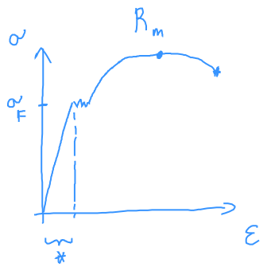

Rudak gerendák feszültségi állapota
Normál igénybevétel
Idealizált húzókísérlet:

Fajlagos megnyúlás (mérnöki alakváltozás)
Keresztirányban:
Izotrop anyagi viselkedés esetén - ez van csak sziltannál.
Engineering strain - sziltanban ez
Logaritmikus (valós) alakváltozás (logarithmic/true strain)
Mechanikus feszültség:
Gondolatban kettévágjuk a testet: anyagi kényszerkapcsolatokat megszüntettem. Ha teljesíteni szeretném az egyensúlyt, akkor elérek a normál feszültség fogalmához.
2d ábrázolás

Acél húzódiagramja

- folyáshatár (initial yield stress)
- szakítószilárdság (ultimate stress) * A szilárdságtan tárgyon belül mi a lineárisan rugalmas szakaszban vagyunk érdekeltek. Itt .
Keresztirányú deformációk
Ebből következnek a nemlineáris dolgok?
Saint-Venant féle elv: A ható erő módja (több pont, egy pont, egyenletes eloszlás) nem számít, ha elég távol van az erőhatás (Csak az összege számít)
Ökölszabály:
Optikai feszültségvizsgálat